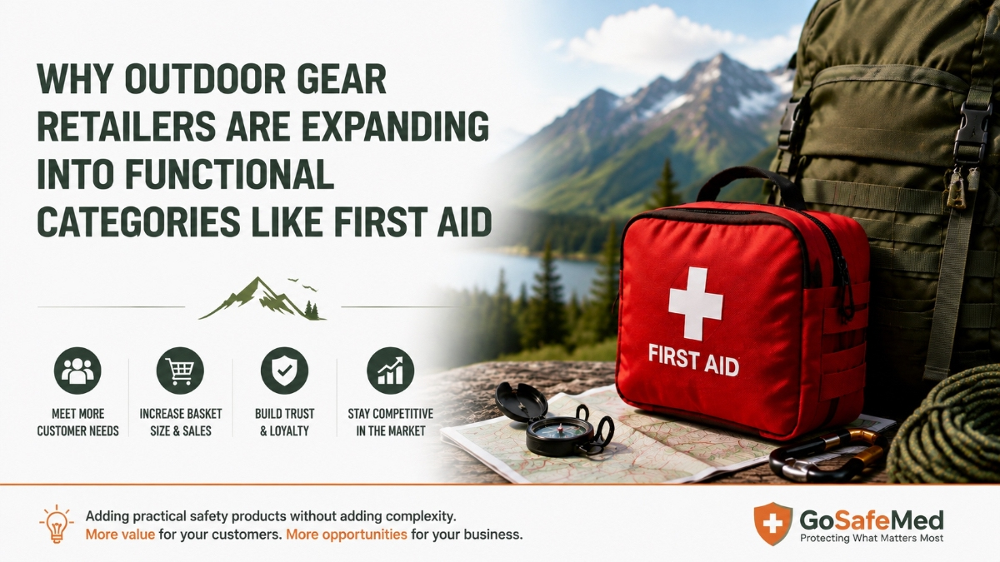

Why Outdoor Gear Retailers Are Expanding Into Functional Categories Like First Aid
AUG 11, 2026

For many outdoor retailers, growth used to follow a familiar path:
Add more products.
More camping equipment.
More apparel.
More footwear.
More accessories.
However, as the outdoor market becomes more specialized, many established businesses are starting to think differently.
Instead of simply adding more products, they are looking for functional categories that naturally fit their existing customer base.
This shift creates new opportunities for categories such as outdoor first aid kits.
From Product Expansion to Customer-Based Expansion
Recently, through discussions with several outdoor and tactical businesses, we noticed an interesting pattern.
Some companies have built strong positions around a specific functional category.
For example, some retailers specialize in outdoor lighting and flashlights, offering dozens of models for different environments and users. Others focus deeply on tactical equipment, survival gear, or mission-oriented products.
Their strength is not being a store that sells everything.
Their strength is being trusted by customers who have a specific purpose in mind.
However, once a business has already built:
- website traffic;
- customer trust;
- product expertise;
- purchasing relationships;
the next question naturally becomes:
What other products can serve the same customers?
The Best New Products Are Not Always Completely New
When businesses consider expanding their product range, the first thought is often:
“Which popular product category should we add next?”
But successful expansion is usually not about entering a completely unrelated market.
It is about finding products that match the customer journey.
A customer purchasing:
- an outdoor flashlight;
- a tactical backpack;
- survival equipment;
- camping accessories;
is usually preparing for a situation.
They are not only buying an item.
They are preparing for an experience.
This is why functional categories can create additional value.
Why Functional Categories Are Attractive to Outdoor Retailers
Compared with traditional outdoor categories, many functional products have different advantages.
They often:
Do not depend heavily on seasons
Unlike clothing or some recreational products, functional equipment is usually driven by practical needs rather than seasonal trends.
Do not require complex variations
Many functional products do not involve:
- multiple sizes;
- fashion changes;
- frequent style updates.
This makes inventory management easier.
Complement existing products naturally
The strongest category additions are often products that customers already expect to use together.
For example:
A customer buying camping equipment may also need lighting.
A customer buying tactical gear may also consider communication, navigation, or medical preparedness.
Why First Aid Fits the Outdoor Equipment Ecosystem
Outdoor first aid is a good example of a functional category that connects naturally with existing outdoor customers.
The purpose is not simply to sell another bag.
It is to help customers prepare for different situations.
A day hiker may need a compact first aid kit for minor injuries.
A family camping customer may need a more complete solution for multiple users.
A remote traveler or overlander may require a more advanced kit because professional assistance may not be immediately available.
For retailers, this means first aid can be positioned as a practical addition to existing outdoor preparation.
The Opportunity Is Not Only More Products — It Is Better Customer Solutions
For specialized outdoor businesses, product expansion is not about becoming a general store.
It is about becoming a more complete solution provider within their expertise.
The most valuable new products are often not the ones that are completely different.
They are the ones that make sense.
They fit the customer.
They fit the brand.
And they strengthen the reason customers choose that retailer in the first place.
Final Thought
As outdoor businesses continue to mature, growth opportunities may increasingly come from functional categories that support existing customer needs.
First aid is one example.
Not because every outdoor retailer should become a medical supplier.
But because preparedness is already part of the outdoor mindset.
The question is not:
“What new product can we sell?”
A better question may be:
“What additional solutions do our existing customers already need?”